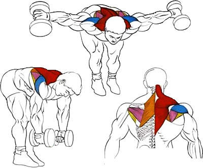

Это изолированное упражнение, которое прорабатывает заднюю часть дельт.
Исходное положение:
Встать прямо, взять снаряд в руки и наклониться вперед под углом в 45 градусов.
Руки с гантелями опустить вниз.
Техника выполнения:
Глубоко вдохнуть. Развести гантели в стороны, стараясь поднять их как можно выше.
Плавно вернуть руки в исходное положение, делая выдох.
Рекомендации:
В конечной точке упражнения передняя часть гантелей должна быть слегка наклонена вперед.
Держите спину ровной, чуть прогнутой в пояснице. Скругление спины может привести к травме.